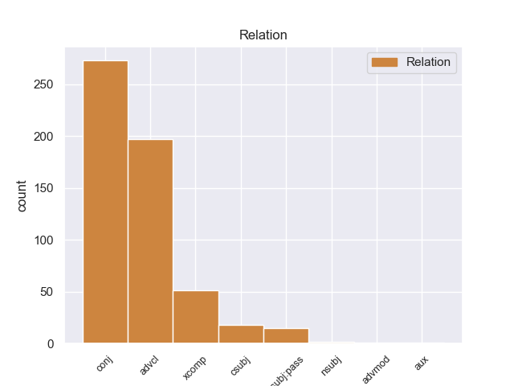
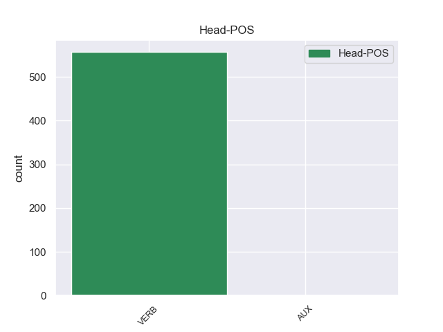
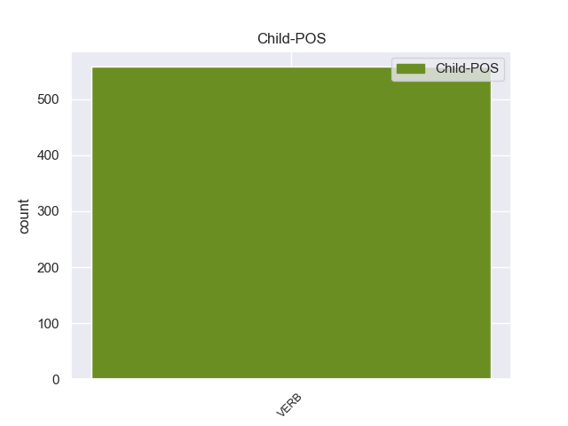

Distribution of features within this leaf



Agreement Rules sorted by frequency.
- When the dependent token is the conjunct(conj) of the head token, and the dependent token is VERB.
1 Υπάρχει υπάρχω VERB _ Aspect=Imp|Mood=Ind|Number=Sing|Person=3|Tense=Pres|VerbForm=Fin|Voice=Act 0 _ _ _
2 μια _ _ _ _ 0 _ _ _
3 άλλη _ _ _ _ 0 _ _ _
4 πλευρά _ _ _ _ 0 _ _ _
5 της _ _ _ _ 0 _ _ _
6 υπόθεσης _ _ _ _ 0 _ _ _
7 , _ _ _ _ 0 _ _ _
8 η _ _ _ _ 0 _ _ _
9 οποία _ _ _ _ 0 _ _ _
10 , _ _ _ _ 0 _ _ _
11 δυστυχώς _ _ _ _ 0 _ _ _
12 , _ _ _ _ 0 _ _ _
13 γεννά γενω VERB _ Aspect=Imp|Mood=Ind|Number=Sing|Person=3|Tense=Pres|VerbForm=Fin|Voice=Act 1 conj _ _
14 την _ _ _ _ 0 _ _ _
15 υποψία _ _ _ _ 0 _ _ _
16 ότι _ _ _ _ 0 _ _ _
17 η _ _ _ _ 0 _ _ _
18 πρόνοια _ _ _ _ 0 _ _ _
19 σχετικά _ _ _ _ 0 _ _ _
20 με _ _ _ _ 0 _ _ _
21 τις _ _ _ _ 0 _ _ _
22 προϋποθέσεις _ _ _ _ 0 _ _ _
23 ελεύθερης _ _ _ _ 0 _ _ _
24 διεξαγωγής _ _ _ _ 0 _ _ _
25 του _ _ _ _ 0 _ _ _
26 κοινοβουλευτικού _ _ _ _ 0 _ _ _
27 έργου _ _ _ _ 0 _ _ _
28 δεν _ _ _ _ 0 _ _ _
29 απασχόλησε _ _ _ _ 0 _ _ _
30 επαρκώς _ _ _ _ 0 _ _ _
31 την _ _ _ _ 0 _ _ _
32 εισαγγελική _ _ _ _ 0 _ _ _
33 αρχή _ _ _ _ 0 _ _ _
34 : _ _ _ _ 0 _ _ _
1 Συνεπώς _ _ _ _ 0 _ _ _
2 , _ _ _ _ 0 _ _ _
3 η _ _ _ _ 0 _ _ _
4 παρούσα _ _ _ _ 0 _ _ _
5 αίτηση _ _ _ _ 0 _ _ _
6 άρσης _ _ _ _ 0 _ _ _
7 της _ _ _ _ 0 _ _ _
8 ασυλίας _ _ _ _ 0 _ _ _
9 δεν _ _ _ _ 0 _ _ _
10 αφορά αφορώ VERB _ Aspect=Imp|Mood=Ind|Number=Sing|Person=3|Tense=Pres|VerbForm=Fin|Voice=Act 0 _ _ _
11 το _ _ _ _ 0 _ _ _
12 ζήτημα _ _ _ _ 0 _ _ _
13 εάν _ _ _ _ 0 _ _ _
14 οι _ _ _ _ 0 _ _ _
15 διώξεις _ _ _ _ 0 _ _ _
16 μπορούν μπορώ VERB _ Aspect=Imp|Mood=Ind|Number=Plur|Person=3|Tense=Pres|VerbForm=Fin|Voice=Act 10 advcl _ _
17 ή _ _ _ _ 0 _ _ _
18 πρέπει _ _ _ _ 0 _ _ _
19 να _ _ _ _ 0 _ _ _
20 συνεχιστούν _ _ _ _ 0 _ _ _
21 με _ _ _ _ 0 _ _ _
22 βάση _ _ _ _ 0 _ _ _
23 το _ _ _ _ 0 _ _ _
24 γαλλικό _ _ _ _ 0 _ _ _
25 δίκαιο _ _ _ _ 0 _ _ _
26 . _ _ _ _ 0 _ _ _
1 Αφενός _ _ _ _ 0 _ _ _
2 , _ _ _ _ 0 _ _ _
3 σ _ _ _ _ 0 _ _ _
4 την _ _ _ _ 0 _ _ _
5 αίτηση _ _ _ _ 0 _ _ _
6 λήψης _ _ _ _ 0 _ _ _
7 μέτρων _ _ _ _ 0 _ _ _
8 δικαστικής _ _ _ _ 0 _ _ _
9 επιτήρησης _ _ _ _ 0 _ _ _
10 δεν _ _ _ _ 0 _ _ _
11 διευκρινίζονται _ _ _ _ 0 _ _ _
12 οι _ _ _ _ 0 _ _ _
13 χώρες _ _ _ _ 0 _ _ _
14 τις _ _ _ _ 0 _ _ _
15 οποίες _ _ _ _ 0 _ _ _
16 θα _ _ _ _ 0 _ _ _
17 απαγορευθεί _ _ _ _ 0 _ _ _
18 να _ _ _ _ 0 _ _ _
19 επισκεφθούν _ _ _ _ 0 _ _ _
20 οι _ _ _ _ 0 _ _ _
21 κατηγορούμενοι _ _ _ _ 0 _ _ _
22 και _ _ _ _ 0 _ _ _
23 αφετέρου _ _ _ _ 0 _ _ _
24 , _ _ _ _ 0 _ _ _
25 ύστερα _ _ _ _ 0 _ _ _
26 από _ _ _ _ 0 _ _ _
27 απόφαση _ _ _ _ 0 _ _ _
28 του _ _ _ _ 0 _ _ _
29 Ακυρωτικού _ _ _ _ 0 _ _ _
30 Δικαστηρίου _ _ _ _ 0 _ _ _
31 , _ _ _ _ 0 _ _ _
32 το _ _ _ _ 0 _ _ _
33 εύρος _ _ _ _ 0 _ _ _
34 της _ _ _ _ 0 _ _ _
35 διαδικασίας _ _ _ _ 0 _ _ _
36 μένει μένώ VERB _ Aspect=Imp|Mood=Ind|Number=Sing|Person=3|Tense=Pres|VerbForm=Fin|Voice=Act 0 _ _ _
37 να _ _ _ _ 0 _ _ _
38 προσδιοριστεί προσδιοριώ VERB _ Aspect=Imp|Mood=Ind|Number=Sing|Person=3|Tense=Pres|VerbForm=Fin|Voice=Pass 36 xcomp _ _
39 με _ _ _ _ 0 _ _ _
40 απόφαση _ _ _ _ 0 _ _ _
41 του _ _ _ _ 0 _ _ _
42 Εφετείου _ _ _ _ 0 _ _ _
43 . _ _ _ _ 0 _ _ _
1 Η _ _ _ _ 0 _ _ _
2 ανακοίνωση _ _ _ _ 0 _ _ _
3 αυτή _ _ _ _ 0 _ _ _
4 μπορεί μπορώ VERB _ Aspect=Imp|Mood=Ind|Number=Sing|Person=3|Tense=Pres|VerbForm=Fin|Voice=Act 0 _ _ _
5 να _ _ _ _ 0 _ _ _
6 ερμηνευτεί _ _ _ _ 0 _ _ _
7 ως _ _ _ _ 0 _ _ _
8 πιθανό _ _ _ _ 0 _ _ _
9 σημάδι _ _ _ _ 0 _ _ _
10 ότι _ _ _ _ 0 _ _ _
11 μετά _ _ _ _ 0 _ _ _
12 από _ _ _ _ 0 _ _ _
13 εβδομάδες _ _ _ _ 0 _ _ _
14 απειλών _ _ _ _ 0 _ _ _
15 εναντίον _ _ _ _ 0 _ _ _
16 των _ _ _ _ 0 _ _ _
17 Ηνωμένων _ _ _ _ 0 _ _ _
18 Πολιτειών _ _ _ _ 0 _ _ _
19 και _ _ _ _ 0 _ _ _
20 της _ _ _ _ 0 _ _ _
21 Νότιας _ _ _ _ 0 _ _ _
22 Κορέας _ _ _ _ 0 _ _ _
23 , _ _ _ _ 0 _ _ _
24 η _ _ _ _ 0 _ _ _
25 Πιονγκγιάνγκ _ _ _ _ 0 _ _ _
26 τελικά _ _ _ _ 0 _ _ _
27 εξετάζει εξετάζω VERB _ Aspect=Imp|Mood=Ind|Number=Sing|Person=3|Tense=Pres|VerbForm=Fin|Voice=Act 4 csubj _ _
28 την _ _ _ _ 0 _ _ _
29 πιθανότητα _ _ _ _ 0 _ _ _
30 διαλόγου _ _ _ _ 0 _ _ _
31 . _ _ _ _ 0 _ _ _
1 από _ _ _ _ 0 _ _ _
2 τα _ _ _ _ 0 _ _ _
3 δε _ _ _ _ 0 _ _ _
4 έγγραφα _ _ _ _ 0 _ _ _
5 της _ _ _ _ 0 _ _ _
6 υπόθεσης _ _ _ _ 0 _ _ _
7 προκύπτει προκύω VERB _ Aspect=Imp|Mood=Ind|Number=Sing|Person=3|Tense=Pres|VerbForm=Fin|Voice=Pass 0 _ _ _
8 ότι _ _ _ _ 0 _ _ _
9 δεν _ _ _ _ 0 _ _ _
10 φαίνεται φαίνω VERB _ Aspect=Imp|Mood=Ind|Number=Sing|Person=3|Tense=Pres|VerbForm=Fin|Voice=Act 7 csubj:pass _ _
11 να _ _ _ _ 0 _ _ _
12 έχει _ _ _ _ 0 _ _ _
13 ληφθεί _ _ _ _ 0 _ _ _
14 υπόψη _ _ _ _ 0 _ _ _
15 η _ _ _ _ 0 _ _ _
16 σύσταση _ _ _ _ 0 _ _ _
17 να _ _ _ _ 0 _ _ _
18 διαβιβαστεί _ _ _ _ 0 _ _ _
19 η _ _ _ _ 0 _ _ _
20 αίτηση _ _ _ _ 0 _ _ _
21 άρσης _ _ _ _ 0 _ _ _
22 της _ _ _ _ 0 _ _ _
23 ασυλίας _ _ _ _ 0 _ _ _
24 μόνον _ _ _ _ 0 _ _ _
25 επί _ _ _ _ 0 _ _ _
26 τη _ _ _ _ 0 _ _ _
27 βάσει _ _ _ _ 0 _ _ _
28 ακριβέστερου _ _ _ _ 0 _ _ _
29 προσδιορισμού _ _ _ _ 0 _ _ _
30 όσον _ _ _ _ 0 _ _ _
31 αφορά _ _ _ _ 0 _ _ _
32 τους _ _ _ _ 0 _ _ _
33 τόπους _ _ _ _ 0 _ _ _
34 και _ _ _ _ 0 _ _ _
35 τα _ _ _ _ 0 _ _ _
36 πρόσωπα _ _ _ _ 0 _ _ _
37 που _ _ _ _ 0 _ _ _
38 εμπλέκονται _ _ _ _ 0 _ _ _
39 σ _ _ _ _ 0 _ _ _
40 την _ _ _ _ 0 _ _ _
41 υπόθεση _ _ _ _ 0 _ _ _
42 . _ _ _ _ 0 _ _ _
1 " _ _ _ _ 0 _ _ _
2 Όλοι _ _ _ _ 0 _ _ _
3 εδώ _ _ _ _ 0 _ _ _
4 είναι _ _ _ _ 0 _ _ _
5 τρομαγμένοι _ _ _ _ 0 _ _ _
6 γιατί _ _ _ _ 0 _ _ _
7 κανείς _ _ _ _ 0 _ _ _
8 δεν _ _ _ _ 0 _ _ _
9 ξέρει ξέρω VERB _ Aspect=Imp|Mood=Ind|Number=Sing|Person=3|Tense=Pres|VerbForm=Fin|Voice=Act 0 _ _ _
10 τι _ _ _ _ 0 _ _ _
11 πρόκειται πρόκειται VERB _ Aspect=Imp|Mood=Ind|Number=Sing|Person=3|Tense=Pres|VerbForm=Fin|Voice=Act 9 nsubj _ _
12 να _ _ _ _ 0 _ _ _
13 συμβεί _ _ _ _ 0 _ _ _
14 " _ _ _ _ 0 _ _ _
15 , _ _ _ _ 0 _ _ _
16 λέει _ _ _ _ 0 _ _ _
17 ο _ _ _ _ 0 _ _ _
18 Γιούντορ _ _ _ _ 0 _ _ _
19 , _ _ _ _ 0 _ _ _
20 κάτοικος _ _ _ _ 0 _ _ _
21 του _ _ _ _ 0 _ _ _
22 Μπαχτσισαράι _ _ _ _ 0 _ _ _
23 . _ _ _ _ 0 _ _ _
1 Πρέπει πρέπει VERB _ Aspect=Imp|Mood=Ind|Number=Sing|Person=3|Tense=Pres|VerbForm=Fin|Voice=Act 3 advmod _ _
2 να _ _ _ _ 0 _ _ _
3 υπάρχουν υπάρω VERB _ Aspect=Imp|Mood=Ind|Number=Plur|Person=3|Tense=Pres|VerbForm=Fin|Voice=Pass 0 _ _ _
4 κανόνες _ _ _ _ 0 _ _ _
5 που _ _ _ _ 0 _ _ _
6 θα _ _ _ _ 0 _ _ _
7 προστατεύουν _ _ _ _ 0 _ _ _
8 τους _ _ _ _ 0 _ _ _
9 πολίτες _ _ _ _ 0 _ _ _
10 και _ _ _ _ 0 _ _ _
11 τους _ _ _ _ 0 _ _ _
12 καταναλωτές _ _ _ _ 0 _ _ _
13 . _ _ _ _ 0 _ _ _
1 Υπάρχουν _ _ _ _ 0 _ _ _
2 βάσιμες _ _ _ _ 0 _ _ _
3 ενδείξεις _ _ _ _ 0 _ _ _
4 ότι _ _ _ _ 0 _ _ _
5 σ _ _ _ _ 0 _ _ _
6 την _ _ _ _ 0 _ _ _
7 υπόθεση _ _ _ _ 0 _ _ _
8 της _ _ _ _ 0 _ _ _
9 απαγωγής _ _ _ _ 0 _ _ _
10 του _ _ _ _ 0 _ _ _
11 δημοσιογράφου _ _ _ _ 0 _ _ _
12 της _ _ _ _ 0 _ _ _
13 Wall _ _ _ _ 0 _ _ _
14 Street _ _ _ _ 0 _ _ _
15 Journal _ _ _ _ 0 _ _ _
16 , _ _ _ _ 0 _ _ _
17 Daniel _ _ _ _ 0 _ _ _
18 Pearl _ _ _ _ 0 _ _ _
19 , _ _ _ _ 0 _ _ _
20 μπορεί μπορώ VERB _ Aspect=Imp|Mood=Ind|Number=Sing|Person=3|Tense=Pres|VerbForm=Fin|Voice=Act 22 aux _ _
21 να _ _ _ _ 0 _ _ _
22 εμπλέκονται εμπλέάζω VERB _ Aspect=Imp|Mood=Ind|Number=Plur|Person=3|Tense=Pres|VerbForm=Fin|Voice=Pass 0 _ _ _
23 πρώην _ _ _ _ 0 _ _ _
24 μέλη _ _ _ _ 0 _ _ _
25 των _ _ _ _ 0 _ _ _
26 πακιστανικών _ _ _ _ 0 _ _ _
27 δυνάμεων _ _ _ _ 0 _ _ _
28 ασφαλείας _ _ _ _ 0 _ _ _
29 , _ _ _ _ 0 _ _ _
30 υποστηρικτές _ _ _ _ 0 _ _ _
31 των _ _ _ _ 0 _ _ _
32 Ταλιμπάν _ _ _ _ 0 _ _ _
33 . _ _ _ _ 0 _ _ _
Disagree Examples:
1 Οι _ _ _ _ 0 _ _ _
2 ρεπόρτερς _ _ _ _ 0 _ _ _
3 της _ _ _ _ 0 _ _ _
4 εκπομπής _ _ _ _ 0 _ _ _
5 ξεναγούνται _ _ _ _ 0 _ _ _
6 σ _ _ _ _ 0 _ _ _
7 τους _ _ _ _ 0 _ _ _
8 χώρους _ _ _ _ 0 _ _ _
9 της _ _ _ _ 0 _ _ _
10 Ιεράς _ _ _ _ 0 _ _ _
11 Μονής _ _ _ _ 0 _ _ _
12 της _ _ _ _ 0 _ _ _
13 Ευαγγελίστριας _ _ _ _ 0 _ _ _
14 σ _ _ _ _ 0 _ _ _
15 τη _ _ _ _ 0 _ _ _
16 Σκιάθο _ _ _ _ 0 _ _ _
17 , _ _ _ _ 0 _ _ _
18 η _ _ _ _ 0 _ _ _
19 οποία _ _ _ _ 0 _ _ _
20 ιδρύθηκε ιδρύω VERB VERB Aspect=Perf|Mood=Ind|Number=Sing|Person=3|Tense=Past|VerbForm=Fin|Voice=Pass 0 _ _ _
21 το _ _ _ _ 0 _ _ _
22 1797 _ _ _ _ 0 _ _ _
23 , _ _ _ _ 0 _ _ _
24 διαδραματίζοντας _ _ _ _ 0 _ _ _
25 σημαντικό _ _ _ _ 0 _ _ _
26 ρόλο _ _ _ _ 0 _ _ _
27 σ _ _ _ _ 0 _ _ _
28 τον _ _ _ _ 0 _ _ _
29 απελευθερωτικό _ _ _ _ 0 _ _ _
30 αγώνα _ _ _ _ 0 _ _ _
31 κατά _ _ _ _ 0 _ _ _
32 των _ _ _ _ 0 _ _ _
33 Τούρκων _ _ _ _ 0 _ _ _
34 , _ _ _ _ 0 _ _ _
35 ενώ _ _ _ _ 0 _ _ _
36 σήμερα _ _ _ _ 0 _ _ _
37 φιλοξενεί φιλοξενώ VERB VERB Aspect=Imp|Mood=Ind|Number=Sing|Person=3|Tense=Pres|VerbForm=Fin|Voice=Act 20 advcl _ _
38 σπάνια _ _ _ _ 0 _ _ _
39 αντικείμενα _ _ _ _ 0 _ _ _
40 και _ _ _ _ 0 _ _ _
41 χειρόγραφα _ _ _ _ 0 _ _ _
42 . _ _ _ _ 0 _ _ _
1 Ο _ _ _ _ 0 _ _ _
2 Αντιπρόεδρος _ _ _ _ 0 _ _ _
3 των _ _ _ _ 0 _ _ _
4 ΗΠΑ _ _ _ _ 0 _ _ _
5 , _ _ _ _ 0 _ _ _
6 Τζο _ _ _ _ 0 _ _ _
7 Μπάιντεν _ _ _ _ 0 _ _ _
8 , _ _ _ _ 0 _ _ _
9 συναντήθηκε _ _ _ _ 0 _ _ _
10 σ _ _ _ _ 0 _ _ _
11 το _ _ _ _ 0 _ _ _
12 Καπιτώλιο _ _ _ _ 0 _ _ _
13 με _ _ _ _ 0 _ _ _
14 τους _ _ _ _ 0 _ _ _
15 Δημοκρατικούς _ _ _ _ 0 _ _ _
16 της _ _ _ _ 0 _ _ _
17 Γερουσίας _ _ _ _ 0 _ _ _
18 αργά _ _ _ _ 0 _ _ _
19 τη _ _ _ _ 0 _ _ _
20 Δευτέρα _ _ _ _ 0 _ _ _
21 το _ _ _ _ 0 _ _ _
22 βράδυ _ _ _ _ 0 _ _ _
23 καθώς _ _ _ _ 0 _ _ _
24 άρχισαν αρχίζω VERB VERB Aspect=Perf|Mood=Ind|Number=Plur|Person=3|Tense=Past|VerbForm=Fin|Voice=Act 0 _ _ _
25 να _ _ _ _ 0 _ _ _
26 διαρρέουν διαρρέω VERB VERB Aspect=Imp|Mood=Ind|Number=Plur|Person=3|Tense=Pres|VerbForm=Fin|Voice=Act 24 xcomp _ _
27 πληροφορίες _ _ _ _ 0 _ _ _
28 για _ _ _ _ 0 _ _ _
29 επικείμενη _ _ _ _ 0 _ _ _
30 συμφωνία _ _ _ _ 0 _ _ _
31 . _ _ _ _ 0 _ _ _
1 Η _ _ _ _ 0 _ _ _
2 Γαλλική _ _ _ _ 0 _ _ _
3 Αστυνομία _ _ _ _ 0 _ _ _
4 προσπάθησε προσπαθώ VERB VERB Aspect=Perf|Mood=Ind|Number=Sing|Person=3|Tense=Past|VerbForm=Fin|Voice=Act 0 _ _ _
5 αρκετές _ _ _ _ 0 _ _ _
6 φορές _ _ _ _ 0 _ _ _
7 να _ _ _ _ 0 _ _ _
8 εισβάλλει εισβάλλω VERB VERB Aspect=Imp|Mood=Ind|Number=Sing|Person=3|Tense=Pres|VerbForm=Fin|Voice=Act 4 xcomp _ _
9 σ _ _ _ _ 0 _ _ _
10 το _ _ _ _ 0 _ _ _
11 σπίτι _ _ _ _ 0 _ _ _
12 του _ _ _ _ 0 _ _ _
13 υπόπτου _ _ _ _ 0 _ _ _
14 , _ _ _ _ 0 _ _ _
15 με _ _ _ _ 0 _ _ _
16 αποτέλεσμα _ _ _ _ 0 _ _ _
17 να _ _ _ _ 0 _ _ _
18 τραυματιστούν _ _ _ _ 0 _ _ _
19 τρεις _ _ _ _ 0 _ _ _
20 αστυνομικοί _ _ _ _ 0 _ _ _
21 . _ _ _ _ 0 _ _ _
1 Σ _ _ _ _ 0 _ _ _
2 το _ _ _ _ 0 _ _ _
3 μεταξύ _ _ _ _ 0 _ _ _
4 , _ _ _ _ 0 _ _ _
5 οι _ _ _ _ 0 _ _ _
6 υπηρεσίες _ _ _ _ 0 _ _ _
7 του _ _ _ _ 0 _ _ _
8 υπουργείου _ _ _ _ 0 _ _ _
9 Υγείας _ _ _ _ 0 _ _ _
10 της _ _ _ _ 0 _ _ _
11 Κύπρου _ _ _ _ 0 _ _ _
12 εντόπισαν _ _ _ _ 0 _ _ _
13 σε _ _ _ _ 0 _ _ _
14 δείγματα _ _ _ _ 0 _ _ _
15 μελιού _ _ _ _ 0 _ _ _
16 ελληνικής _ _ _ _ 0 _ _ _
17 προέλευσης _ _ _ _ 0 _ _ _
18 υπολείμματα _ _ _ _ 0 _ _ _
19 της _ _ _ _ 0 _ _ _
20 ουσίας _ _ _ _ 0 _ _ _
21 1,4 _ _ _ _ 0 _ _ _
22 διχλωροβενζόλιο _ _ _ _ 0 _ _ _
23 και _ _ _ _ 0 _ _ _
24 συνέστησαν συστήνω VERB VERB Aspect=Perf|Mood=Ind|Number=Plur|Person=3|Tense=Past|VerbForm=Fin|Voice=Act 0 _ _ _
25 σ _ _ _ _ 0 _ _ _
26 τους _ _ _ _ 0 _ _ _
27 καταναλωτές _ _ _ _ 0 _ _ _
28 να _ _ _ _ 0 _ _ _
29 αποφεύγουν αποφεύγω VERB VERB Aspect=Imp|Mood=Ind|Number=Plur|Person=3|Tense=Pres|VerbForm=Fin|Voice=Act 24 xcomp _ _
30 συγκεκριμένες _ _ _ _ 0 _ _ _
31 παρτίδες _ _ _ _ 0 _ _ _
32 του _ _ _ _ 0 _ _ _
33 μελιού _ _ _ _ 0 _ _ _
34 " _ _ _ _ 0 _ _ _
35 Attiki _ _ _ _ 0 _ _ _
36 " _ _ _ _ 0 _ _ _
37 με _ _ _ _ 0 _ _ _
38 ημερομηνία _ _ _ _ 0 _ _ _
39 ανάλωσης _ _ _ _ 0 _ _ _
40 πριν _ _ _ _ 0 _ _ _
41 τον _ _ _ _ 0 _ _ _
42 Ιανουάριο_του_2008 _ _ _ _ 0 _ _ _
43 . _ _ _ _ 0 _ _ _
1 Λίγο _ _ _ _ 0 _ _ _
2 πριν _ _ _ _ 0 _ _ _
3 την _ _ _ _ 0 _ _ _
4 έκθεση _ _ _ _ 0 _ _ _
5 έγινε γίνομαι VERB VERB Aspect=Perf|Mood=Ind|Number=Sing|Person=3|Tense=Past|VerbForm=Fin|Voice=Pass 0 _ _ _
6 γνωστό _ _ _ _ 0 _ _ _
7 ότι _ _ _ _ 0 _ _ _
8 οι _ _ _ _ 0 _ _ _
9 κρατήσεις _ _ _ _ 0 _ _ _
10 από _ _ _ _ 0 _ _ _
11 τη _ _ _ _ 0 _ _ _
12 Γερμανία _ _ _ _ 0 _ _ _
13 σ _ _ _ _ 0 _ _ _
14 την _ _ _ _ 0 _ _ _
15 Ελλάδα _ _ _ _ 0 _ _ _
16 μειώθηκαν _ _ _ _ 0 _ _ _
17 κατά _ _ _ _ 0 _ _ _
18 30% _ _ _ _ 0 _ _ _
19 , _ _ _ _ 0 _ _ _
20 ενώ _ _ _ _ 0 _ _ _
21 επίσημα _ _ _ _ 0 _ _ _
22 στοχεία _ _ _ _ 0 _ _ _
23 αναφέρουν αναφέρω VERB VERB Aspect=Imp|Mood=Ind|Number=Plur|Person=3|Tense=Pres|VerbForm=Fin|Voice=Act 5 advcl _ _
24 ότι _ _ _ _ 0 _ _ _
25 την _ _ _ _ 0 _ _ _
26 Ελλάδα _ _ _ _ 0 _ _ _
27 , _ _ _ _ 0 _ _ _
28 κατά _ _ _ _ 0 _ _ _
29 το _ _ _ _ 0 _ _ _
30 2011 _ _ _ _ 0 _ _ _
31 , _ _ _ _ 0 _ _ _
32 επισκέπτηκαν _ _ _ _ 0 _ _ _
33 2.240.000 _ _ _ _ 0 _ _ _
34 Γερμανοί _ _ _ _ 0 _ _ _
35 , _ _ _ _ 0 _ _ _
36 έχοντας _ _ _ _ 0 _ _ _
37 δαπανήσει _ _ _ _ 0 _ _ _
38 1.8 _ _ _ _ 0 _ _ _
39 δισεκατομμύρια _ _ _ _ 0 _ _ _
40 ευρώ _ _ _ _ 0 _ _ _
41 . _ _ _ _ 0 _ _ _